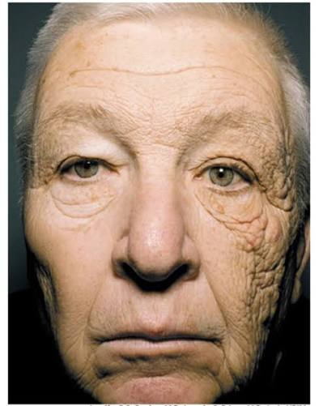

귀찮음
야근에 지친 바쁜 직장인 — 관리에 쓸 시간·에너지가 없다
신뢰
데이터 학습 기반 미래 예측 모델로 신뢰 확보

현실감
선크림 예시 — 누적된 관리 차이가 5년·10년 뒤를 가른다

진단·탐색·구매·관리의 단계마다 노력이 들어 귀찮다
→ 왜?
- 피부 관리가 필수 사항이라는 인식이 부족하기 때문
- 본인의 '루틴'에 속해있지 않기 때문
하루이틀 하다가 금방 그만둔다
→ 왜?
매일 진단과 관리를 지속해야 할 동기가 부족하기 때문
"지금 안 해도 괜찮겠지" — 관리의 효과가 눈에 보이지 않는다
AI Hub 피부 데이터셋 활용(약 355만 건 규모) — 데이터 학습으로 미래 피부 예측 신뢰도 확보
Web Speech API(STT/TTS) 기반 음성 진단 — 타이핑 없이 대화형 진단, 답변은 스프레드시트에 누적 저장
일방향 설문 → 이전 답변을 기억하는 양방향 대화
진단 결과 기반 코스맥스 제품 맞춤 추천 + AI 코멘트 자동 생성
진단·탐색·구매·관리의 모든 단계에서 사용자의 노력을 최소화한다
피부 관리를 매일 지킬 수 있는 하나의 자동화된 루틴으로 만든다
매일 진단과 관리를 지속해야 할 강제적/선택적 동기를 제공한다
보이지 않던 피부 상태와 변화를 눈으로 체감하게 만든다
진단 결과·추천에 대해 팝업 공지로 근거 제시(관련 논문·기사 등) · 약 10,000건 규모 데이터 학습으로 진단·예측 신뢰도 확보
미성년자 대상 서비스에는 보호자 동의 절차 의무화 · 연령대별 피부 고민에 최적화된 진단 제공
진단·탐색·구매 3단계 리소스를 최소화한 '노력 없는 지속 관리' 경험
진단 수치·라이프스타일·제품 반응 데이터 축적 → 맞춤 정확도·예측 모델 고도화
구독 기반 반복 매출 + 실사용 피부 데이터 확보로 제품 개발·추천 선순환
카메라 배송 등 초기 진입 장벽, 습관 형성 전 이탈 리스크 → 온보딩·초기 무료 체험으로 완화
촬영 환경(조명·거리) 편차에 따른 신뢰도 한계 → 촬영 가이드 UI로 보완
개인화 정확도가 사용 기간에 비례 → 초기에는 예측/추천 정밀도가 낮을 수 있음
지금부터 실제 앱 화면으로 My Beauty PT의 핵심 기능을 시연합니다